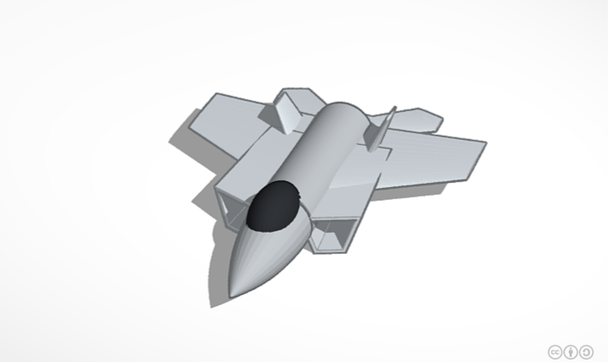
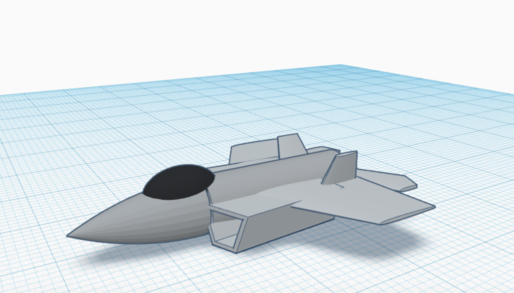

This assignment consisted of designing a model for 3D printing. This was done in TinkerCad. The jet is based off the F1 Raptor Jet. I created the jet by breaking it down into the simplest of shapes. The following images display the model in 3D as well as its design and model.
  home page
home page